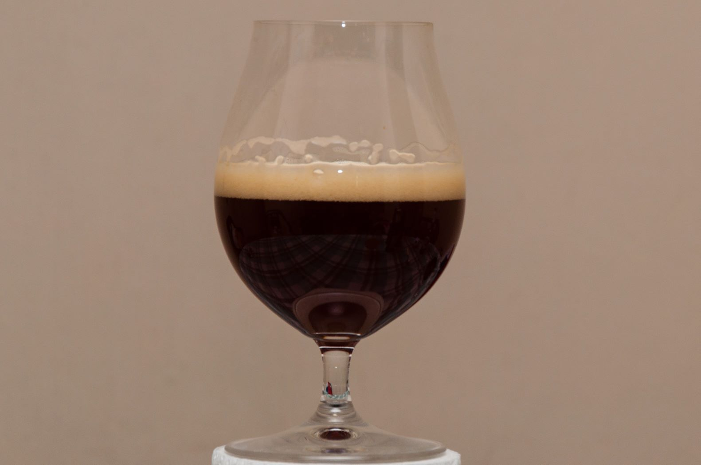
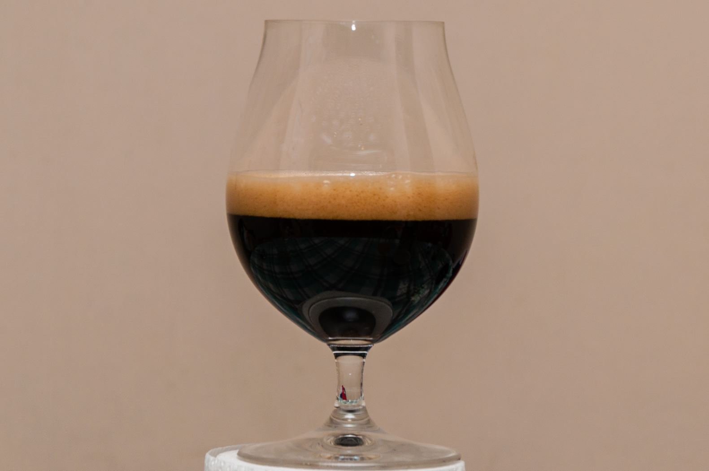

Belgian Golden Ale
Cerveza de inspiración belga, de color dorado con leves tonos a grano y olor y sabor a lúpulos frutales cuidadosamente seleccionados.

Belgian Strong Dark Ale
Cerveza de inspiración belga. Una cerveza de carácter fuerte color ámbar oscuro, aromas a canela y naranja. Con un amargor leve, presenta sabores típicos de las cervezas belgas con suaves notas frutales y herbales.

English Cream Stout
[Descripción English Cream Stout]